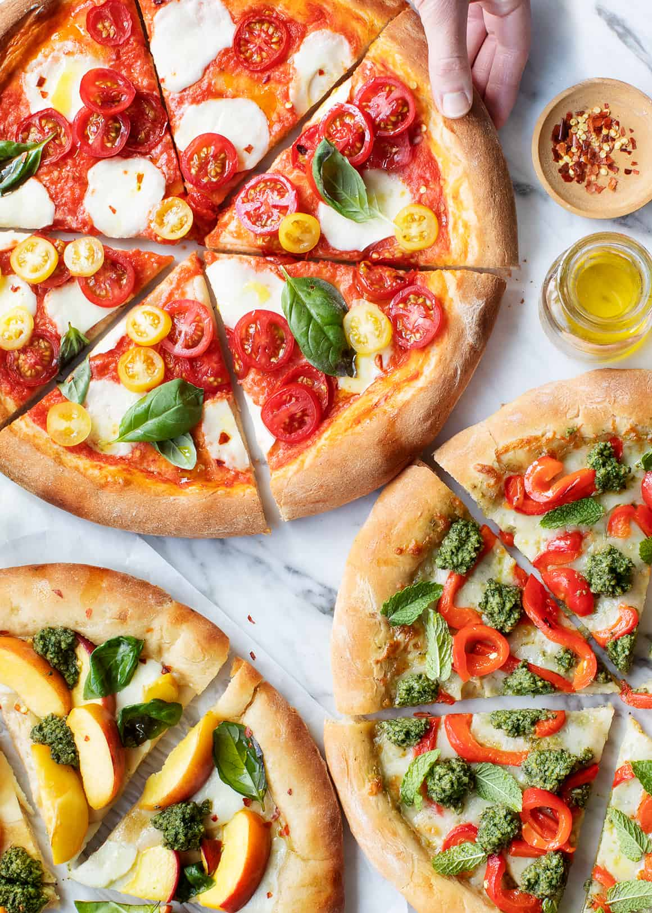

Home
Pizza

Description
Who doesn't love pizza? We certainly do, so here we have a pretty basic homemade pizza recipe for you to try
out!
Ingredients
For the pizza dough
- 1 1/2 cups (355 ml) warm water
- 1 package (2 1/4 teaspoons) active dry yeast
- 3 3/4 cups (490g) bread flour
- 2 tablespoons extra virgin olive oil
- 2 teaspoons kosher salt
- 1 teaspoon sugar
For making the pizza and toppings
- Extra virgin olive oil
- Cornmeal
- Tomato sauce
- Firm mozzarella cheese, grated
- Fresh soft mozzarella cheese, separated into small clumps
- Fontina cheese, grated
- Parmesan cheese, grated
- Feta cheese, grated
- Mushrooms, very thinly sliced if raw, otherwise first sautéed
- Bell peppers, stems and seeds removed, very thinly sliced
- Italian pepperoni, thinly sliced
- Italian sausage, cooked ahead and crumbled
- Sliced black olives
- Chopped fresh basil
- Baby arugula, tossed in a little olive oil, added as pizza comes out of the oven
- Pesto
- Onions, thinly sliced raw or caramelized
- Ham, thinly sliced
Steps
Making the pizza dough
- Proof the yeast.
- Make and knead the pizza dough.
- Let the dough rise.
Preparing the pizzas
- Preheat the pizza stone (or pizza pan or baking sheet).
- Divide the dough into 2 balls.
- Prep the toppings.
- Flatten the dough ball, and stretch out into a round.
- Brush the dough top with olive oil.
- Sprinkle the pizza peel with cornmeal, put flattened dough on top.
- Spread with tomato sauce and sprinkle with toppings.
- Slide pizza into the oven.
- Bake.